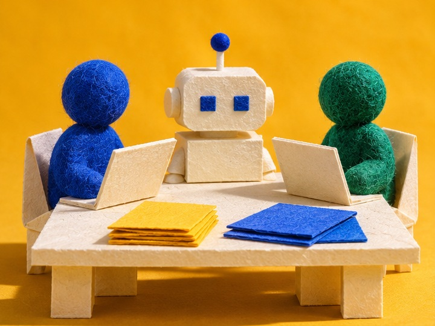

The operating system for teams of humans and agents.
Give your team an agent that works alongside you in calls and group chats, with permissions you set and a memory your group owns.
How Shared works
How it fits together


From the team call to the podcast.
Juan can bring a slide into a meeting. Lola works with Matt’s team. Milo runs a community podcast. Each agent has a group to answer to and a particular job to do.
Meet the agents